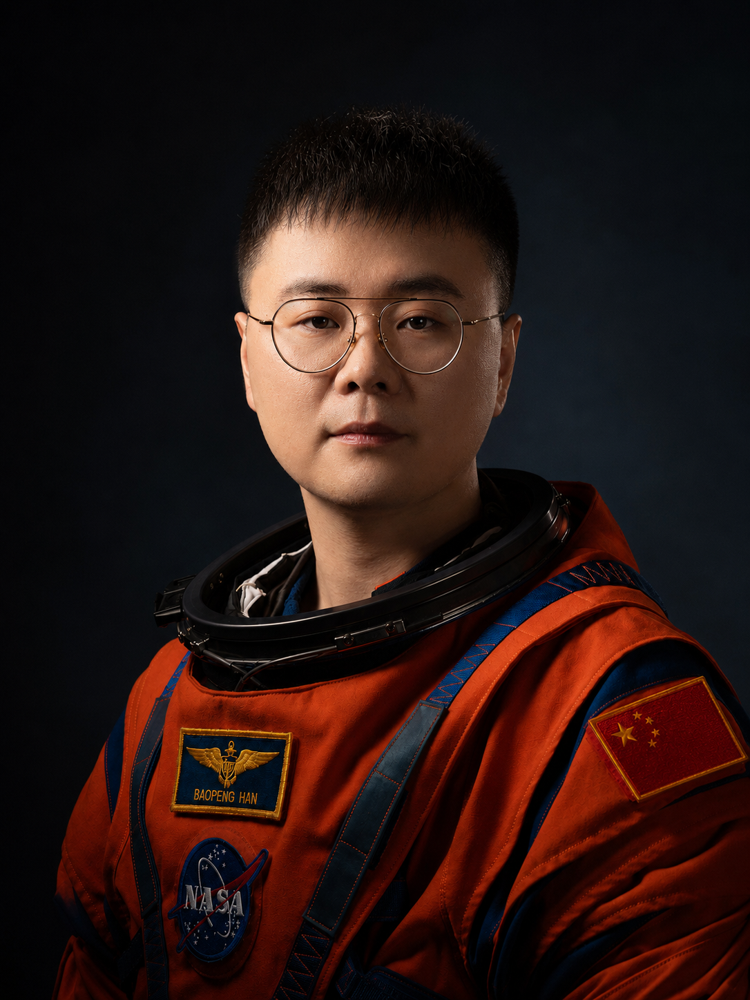
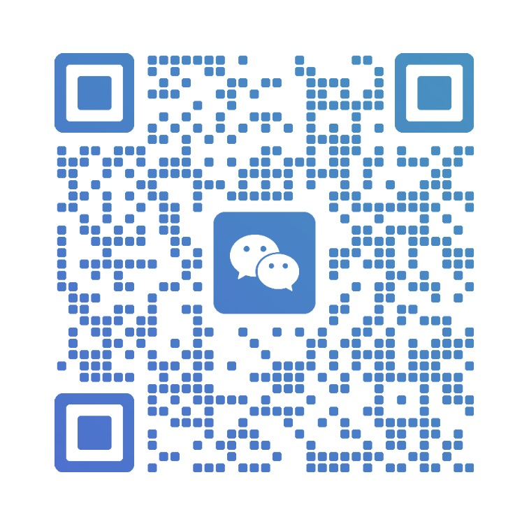

Click AI
韩宝鹏的
AIGC作品集
探索

TEL:13269608136
EMAIL：hbp46907@gmail.com
韩宝鹏 Baopeng
Visual designer/Video production/PM
长期关注 AIGC 视觉叙事、品牌影像和数字内容体验设计。
擅长将视觉概念拆解为可执行的镜头、界面和交互方案。
熟悉从创意脚本、分镜规划到后期包装的完整制作流程。
具备视频制作、视觉设计、项目统筹和跨团队沟通经验。
能够使用生成式工具快速建立风格方向与高质量视觉草案。
重视作品集首页的沉浸感、节奏感和信息呈现效率。
在项目中关注用户第一眼的情绪反馈与继续探索的动机。
善于把复杂想法转化为清晰、可迭代、可落地的设计语言。
熟悉短视频、宣传片、活动视觉和数字展陈相关内容制作。
希望通过 AIGC 提升创作效率，同时保持人的审美判断。
后续可继续补充项目经历、代表作品、软件能力和获奖信息。
这一段先作为占位文案，方便后期继续调整个人简介内容。
工作经历
这里可填写工作经历、项目职责、团队协作和代表成果。
未来已来
联系我，让我们开始创作
TEL:13269608136 MAIL:hannbaoopengg@163.com

扫一扫，添加微信
AIGC PORTFOLIO